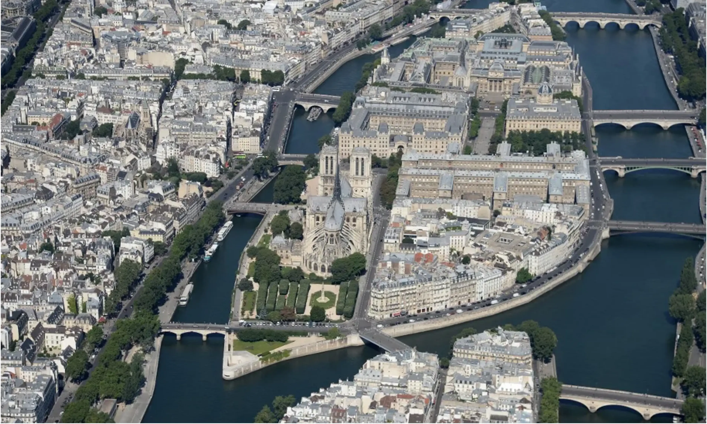
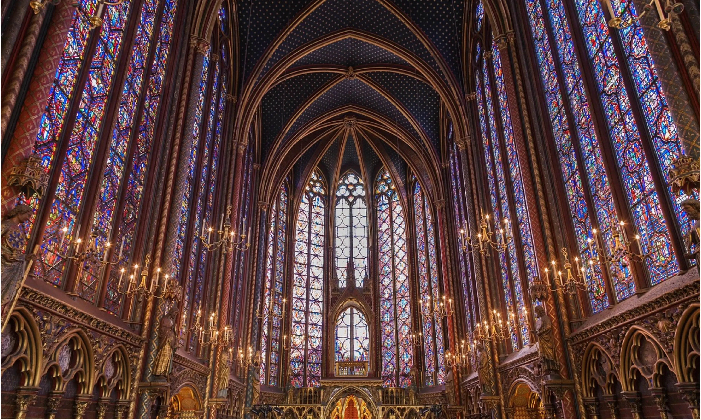
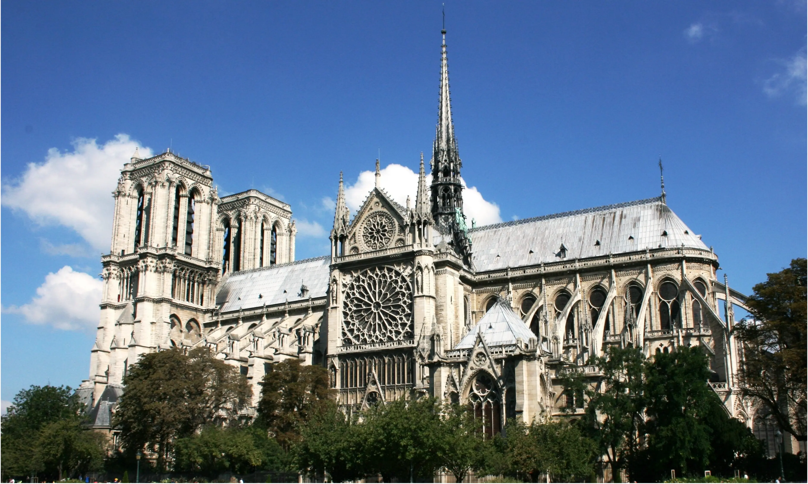

Île de la Cité: A Visitor's Guide
Explore Île de la Cité, the historic heart of Paris. Our guide covers its epic history, legends, iconic landmarks like Notre Dame, and tips for your visit.
Explore The IslandJoin our exclusive walking tour and unravel the timeless stories etched into the stones of Notre Dame.
We don't just recite dates and facts. We bring history to life, sharing the captivating stories that make Paris truly magical.
With extensive experience leading tours in Paris, you're in the hands of a guide who is not only knowledgeable but deeply passionate about the city.
Discover hidden details and a unique perspective that goes beyond the typical tourist path, creating a memorable and personal experience.
The idea for Scenic Zest was born from a deep love for the stories etched into the cobblestone streets of Paris. We believe that a tour should be more than just a walk; it should be an experience that connects you to the soul of the city.
Our mission is to go beyond the guidebooks. We craft intimate, story-driven walking tours that focus on the captivating tales and hidden secrets that make landmarks like Notre Dame truly magical. We don't just show you Paris; we aim to make you feel a part of its incredible history.
Scenic Zest is for the curious traveler, the history lover, and anyone who believes that the best way to discover a city is one story at a time. Join us, and let's explore together.
"Sz was incredible! So engaging and learned so much. Most tours in Paris seem very scripted but he seemed to be having so much fun sharing his knowledge with us. Would recommend the tour and specifically him to anyone!!!"
- Anne
United States • May 2025
"Sz was a terrific Guide! Fun and very easy to listen to! The booking system is challenging though, make sure to read the captions of your booking thoroughly."
- Julia
Germany • April 2025
"The Tour with our guide Sz was good! He kept our attention with quizzes! We learned interessting things around Notre Dame!"
- Sonja
Austria • April 2025
"Wow! Our tour guide, Sz, was very knowledgeable and answered questions that were asked. He was also funny. Definitely recommend taking a tour. It was a beautiful day and the outside tour was great!"
- Bianca
United States • April 2025
"Sz was great! So informative and thorough giving us all the history and answering our questions about Notre Dame. Thanks so much."
- Mel T
April 2025
"Sz was very funny and informative with his game-aproach to history!"
- GetYourGuide Traveler
Austria • April 2025
"The tour of the Notre-Dame was very interessting and we learned a lot of new things. Sz was a nice guide. He made it fun and informative."
- Mira Wakolbinger
April 2025
"Sz is a fabulous guide knowledge was fantastic. We thoroughly enjoyed him. He also had a great sense of humor. We would recommend him to anybody."
- Rochelle Ondell
April 2025
"SZ was very friendly and personable! He was very knowledgeable and gave a very great tour. I highly recommend it to anyone visiting Paris!"
- Kelsey
United States • May 2025
"Sz was an amazing tour guide, with a complete knowledge of french história and Notre Dame. He took time to explain detail by detail and answer all the questions."
- Joao Gabriel Wady
Brazil • May 2025
"This was an incredible and worthwhile tour. Sz was truly an amazing guide and made this tour so memorable for us! He was so knowledgeable and enthusiastic..."
- Layla
United States • July 2025
"Sz was absolutely amazing and so informative! He explained everything so well and with great detail... I would recommend him again and again!"
- Joy
United States • May 2025

Explore Île de la Cité, the historic heart of Paris. Our guide covers its epic history, legends, iconic landmarks like Notre Dame, and tips for your visit.
Explore The Island
Explore the jewel of Gothic architecture in Paris with our guide to its history, legends, and magnificent stained-glass windows.
Read The Guide
A deep dive into the history, architecture, and legends of Notre Dame Cathedral. Explore interactive guides, timelines, and more.
Explore the CathedralThe easiest way to book is directly through our website. Simply choose your desired tour, click the 'Book Now' button, and follow the steps. Booking online is required to secure your spot and benefit from any direct-booking discounts.
We offer a full refund for cancellations made at least 24 hours before the scheduled tour start time. Unfortunately, we cannot provide refunds for cancellations made within 24 hours of the tour or for no-shows.
Our meeting point is next to the large equestrian statue of Charlemagne, which is located in the square (Parvis) in front of Notre Dame Cathedral. Click on "Meeting Point" in the menu for more details.
Your guide will be easy to spot! They will be standing at the meeting point holding a sign with the blue and white "SZ" (Scenic Zest) logo.
Please try to arrive 5-10 minutes early. If you are running late, please call the number provided in your confirmation email. Guides will wait for a few minutes, but cannot hold the group for long. We cannot offer refunds for late arrivals.
We keep our group tours small and intimate to ensure a quality experience. The maximum size is 10 adults, allowing for easy interaction with your guide.
Yes, for our tours that include a visit to Sainte-Chapelle or the Archaeological Crypt, the price includes a pre-booked, timed-entry ticket for that specific monument.
Your guide provides a full, detailed explanation of Sainte-Chapelle's history and architecture from the outside. They will not accompany you inside, allowing you to immerse yourself in its beauty at your own pace without the constraints of a group.
Our tours run rain or shine! Paris is beautiful in all weather. We recommend checking the forecast and dressing appropriately. Please bring an umbrella or raincoat if precipitation is expected.
Children are welcome! Private tours are ideal for families as the pace can be adapted. For group tours, please consider if your child is comfortable with a 1.5-hour walking tour focused on history.
The general walking route is on paved, mostly flat surfaces. However, the historic streets of Paris can have cobblestones and uneven patches. Please contact us in advance to discuss specific accessibility needs.
All our scheduled tours are conducted in English by a fluent, expert guide.
Yes! We are happy to create a custom itinerary for you. Please use the contact form to send us your request, and we will work with you to design your perfect Paris experience.
The Paris Métro is the most efficient way to travel long distances. For shorter distances, walking is a fantastic way to see the city. Buses offer scenic routes, and ride-sharing apps/taxis are also available.
It is not necessary, as many people in the tourism industry speak English. However, learning a few basic phrases like 'Bonjour' (Hello), 'Merci' (Thank you), and 'Au revoir' (Goodbye) is highly appreciated and will make your interactions more pleasant.
In restaurants, a service charge ('service compris') is already included. However, it's common to leave a few extra euros for excellent service. For tour guides, a tip is a wonderful way to show your appreciation if you enjoyed the experience.
Absolutely! Tap water in Paris is perfectly safe and high quality. You can ask for a 'carafe d'eau' (pitcher of tap water) for free in any restaurant, and there are public water fountains (Fontaines Wallace) all over the city.
France uses the Type E plug, which has two round pins and a round earth pin. The standard voltage is 230V. If you are coming from a country with a different voltage (like the US at 120V), ensure your device is dual-voltage or bring a converter.
Many smaller shops and boutiques are closed on Sundays. However, in major tourist areas like the Marais, Champs-Élysées, and Montmartre, you will find many stores open. Most large department stores and grocery stores are also open, often with reduced hours.
In France, it's considered polite to always greet the staff with 'Bonjour' (or 'Bonsoir' in the evening) upon entering a shop, café, or bakery. It's a small but very important cultural courtesy.
Paris is generally a safe city. However, like any major city, it's important to be aware of your surroundings. Pickpocketing is the most common crime, so keep your valuables secure, especially in crowded areas and on public transport.
Credit cards (especially Visa and Mastercard with a chip and PIN) are widely accepted. However, it's always a good idea to have some cash (Euros) for small purchases at bakeries, street markets, or for leaving a small tip.
You can buy single tickets or a book of ten ('carnet') from machines in the station. A pass like the Navigo Découverte might be cost-effective for longer stays. Plan your route using maps in the station or apps like Citymapper or Google Maps. Keep your ticket until you exit the station.
Yes, permanent collections in national museums (like the Louvre, Musée d'Orsay, Centre Pompidou) are free for all visitors under 18, and for EU residents under 26. Special exhibitions may still require a ticket.
The pan-European emergency number is 112, which can be dialed from any phone to reach police, fire, or medical services. Other specific numbers are 15 (medical), 17 (police), and 18 (fire).